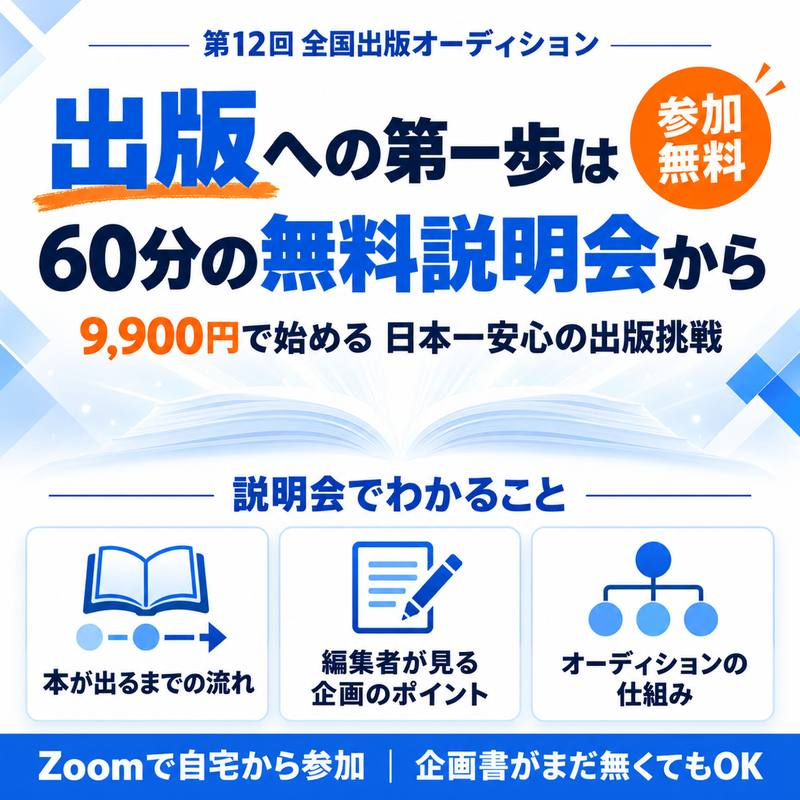

無料説明会に申し込む参加無料・Zoomで約60分
企画書がまだ無くても参加できます
こんな方に来てほしい
- 「いつか本を出したい」と思いながら、何年もたっている
- 自分の仕事や経験が、本になるのか知りたい
- 出版社とのつながりがなく、何から始めればいいか分からない
- 本を書くのは初めて。それでも挑戦してみたい
はじめての出版挑戦を応援しています。
説明会でお話しすること
1本が出るまでの流れ
商業出版の仕組みと、自費出版との違い。本が決まるまでに何が起きるのか。
商業出版の仕組みと、自費出版との違い。本が決まるまでに何が起きるのか。
2編集者が見る企画のポイント
出版社が「この本を出したい」と思う企画には、共通点があります。
出版社が「この本を出したい」と思う企画には、共通点があります。
3全国出版オーディションの仕組み
エントリーから企画書、予選、本選まで。応援を集める方法もお伝えします。
エントリーから企画書、予選、本選まで。応援を集める方法もお伝えします。
4質疑応答
その場で何でも聞けます。
その場で何でも聞けます。
全国出版オーディションとは
本を出したい人が企画を発表し、出版社の編集者が審査するオーディションです。第12回を迎えます。
優勝したら、商業出版100%保証
自費出版ではありません。出版社から本が出ます。
自費出版ではありません。出版社から本が出ます。
優勝を逃しても、出版のチャンス
本選は複数の出版社の編集者が審査。声がかかることがあります。
本選は複数の出版社の編集者が審査。声がかかることがあります。
現役編集長の企画書づくりセミナー付き
協賛出版社 KKロングセラーズの現役編集長が講師です。
協賛出版社 KKロングセラーズの現役編集長が講師です。
エントリー費は追加費用なし
定価12,100円のところ、Webエントリー割引で9,900円（税込）。
定価12,100円のところ、Webエントリー割引で9,900円（税込）。
このオーディションから
出版された本
歴代優勝者の本

優勝しなくても、出版が決まった方々の本
本選では複数の出版社の編集者が企画を審査します。
優勝を逃しても、編集者から声がかかることがあります。

能瀬千恵さん（看護師・整体師）
第3回で総合2位（会場票は1位）。優勝ではなかったものの、その後に自由国民社から『1日1分で身体が整う 首のセルフケア』を出版されました。
第3回で総合2位（会場票は1位）。優勝ではなかったものの、その後に自由国民社から『1日1分で身体が整う 首のセルフケア』を出版されました。
出版までの流れ（第12回）
エントリー2026年11月1日（日）〜2027年1月31日（日）
企画書づくりセミナー・企画書の提出セミナー 12/10・1/14・2/10 提出締切 2月20日（土）
予選（Web投票・YouTube再生数）2027年3月1日（月）〜4月30日（金）
敗者復活戦5月22日（土）
本選（出版社の編集者が審査）7月24日（土）
優勝 → 約1年で商業出版
主催者
岡崎かつひろ
ビジネス書の著者。全国出版オーディションを主催し、企画書づくりから本選まで伴走しています。優勝者の企画は編集者と一緒に磨き、約1年で出版まで進めます。
ビジネス書の著者。全国出版オーディションを主催し、企画書づくりから本選まで伴走しています。優勝者の企画は編集者と一緒に磨き、約1年で出版まで進めます。
参加までの3ステップ
STEP1
このページから申し込む（お名前・メールアドレス・ご希望の日程）
STEP2
完了画面から、説明会用のオープンチャットに参加する
STEP3
当日、メール・オープンチャットでお知らせするZoomに入る
日程はお申込みフォームからお選びいただけます（内容はどの回も同じです）
よくあるご質問
Q. 企画書がまだ無くても参加できますか？
A. はい。説明会で企画の考え方からお話しします。
Q. 参加したら、必ずエントリーしないといけませんか？
A. いいえ。お話を聞いてから決めていただけます。
Q. 文章を書くのが苦手です。
A. 最初に決めるのは「伝えたいこと」と「届けたい読者」です。文章の上手さは、そのあとの話です。
Q. ビジネス書以外でも挑戦できますか？
A. はい。実用書、エッセイ、小説、絵本なども挑戦できます。
Q. スマホでも参加できますか？
A. はい。Zoomのアプリを入れておけば、スマホからも参加できます。